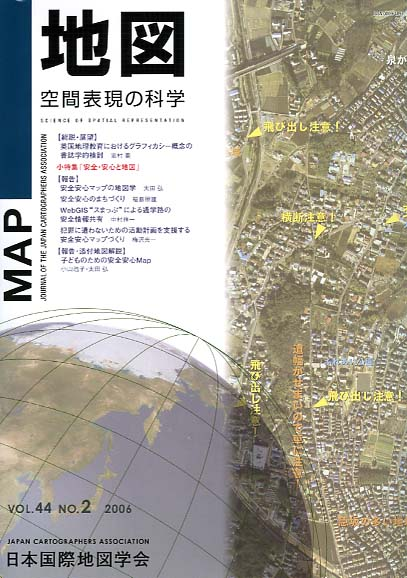
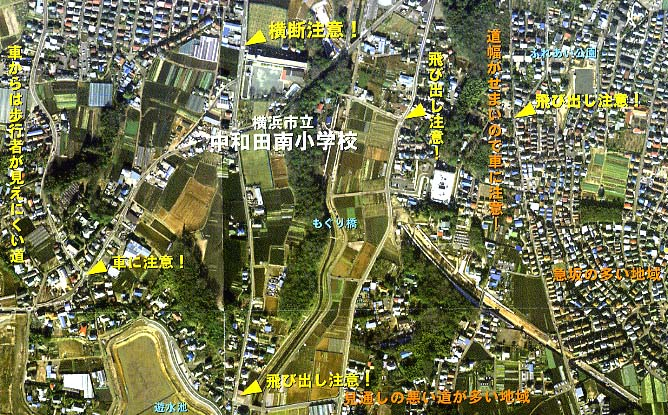

| 最 新 号 | バックナンバー | 添付地図目録 | 投 稿 規 程 |
Vol.44 No.2 （通巻１７４号） ２００６年
| 【総説・展望】 | 英国地理教育におけるグラフィカシー概念の書誌学的検討 | 志村 喬 |
| キーワード：グラフィカシー、英国、地図学習、地理、地理情報、視覚化 | ||
| 小特集「安全・安心と地図」 | ||
| 【報告】 | 安全安心マップの地図学 | 太田 弘 |
| キーワード：リスクマネージメント、地図の力、ＧＩＳ、コミュニティー | ||
| 安全安心のまちづくり−地域安全マップを活用した取り組み− | 福島 照雄 | |
| キーワード：市民協働、マップシール、情報ネットワーク | ||
| WebGIS“スまっぷ”による通学路の安全情報共有−地域の連携で子どもたちの通学路の安全を守る− | 中村 祥一 | |
| キーワード：インターネット、地域住民、情報のリアルタイム | ||
| 犯罪に遭わないための活動計画を支援する安全安心マップづくり | 梅沢 光一 | |
| キーワード：ＧＩＳ、Ｑｕｉｃｋ、スタティックシンボル、ダイナミックシンボル、視覚化 | ||
| 【報告・添付地図解説】 | 子どものための安全安心Ｍａｐ | 小山 浩子・太田 弘 |
| キーワード：ＰＴＡ、行政、コラボレーション（協働）、ＧＩＳ | ||
| 【書評・紹介】 | 台灣的古地圖 日治時期 | 天野 太郎 |
| 【発表要旨】 | 第39回地方大会（神戸） | |
| 第177回例会 | ||
| 【特別会員のページ】 | 財団法人日本測量調査技術協会 | |
| 東京カートグラフィック株式会社 | ||
| 【学会記事】 | ||
| 【添付地図】 | 「2006子どものための安全・安心Ｍａｐ」 | |
| 海上保安庁刊行日本近海海図索引図（平成18年4月現在） | ||
| 国土地理院刊行地図一覧図（平成18年6月1日現在 一般図の部） | ||
|
≪No.44 No.2 表紙≫ |
|
|  |
|
|
|
≪No.44 No.2 添付地図−抜粋≫ |
| 
本図を許可なく複製・利用することを禁止します。 |